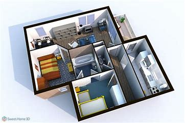

Sobre o Sweet Home 3D
O Sweet Home 3D é um software gratuito de design de interiores que permite criar plantas baixas detalhadas e visualizar os projetos em 3D. Ideal para profissionais e entusiastas que desejam planejar e decorar seus espaços de forma simples e eficaz.
O programa é intuitivo, suportando arrastar e soltar móveis, ajustar dimensões, mudar cores e texturas, e até renderizar imagens realistas do projeto finalizado.
Características Principais
- Interface Intuitiva: Arraste e solte móveis e objetos diretamente no layout.
- Visualização em 3D: Veja o design do ambiente em tempo real, com perspectiva realista.
- Personalização: Ajuste cores, tamanhos, texturas e adicione detalhes aos objetos.
- Biblioteca de Objetos: Inclui centenas de itens pré-configurados e a opção de importar novos modelos.
- Compatibilidade: Disponível para Windows, macOS, Linux e navegadores.
- Exportação: Salve os projetos em PDF, SVG, OBJ ou outros formatos populares.
Galeria
Exemplo de um projeto residencial detalhado criado no Sweet Home 3D.